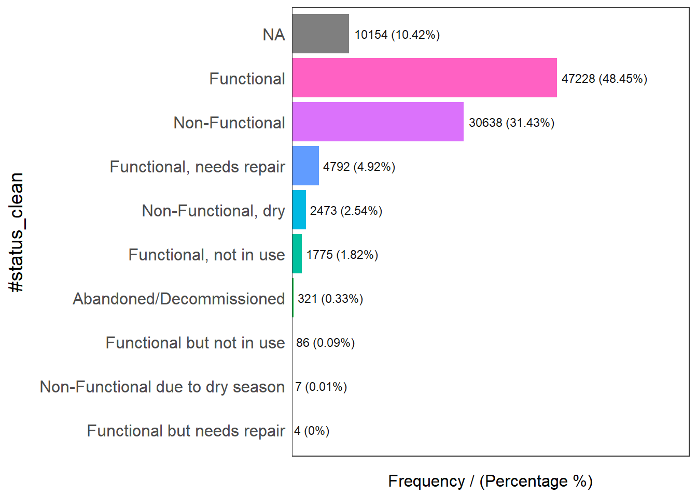
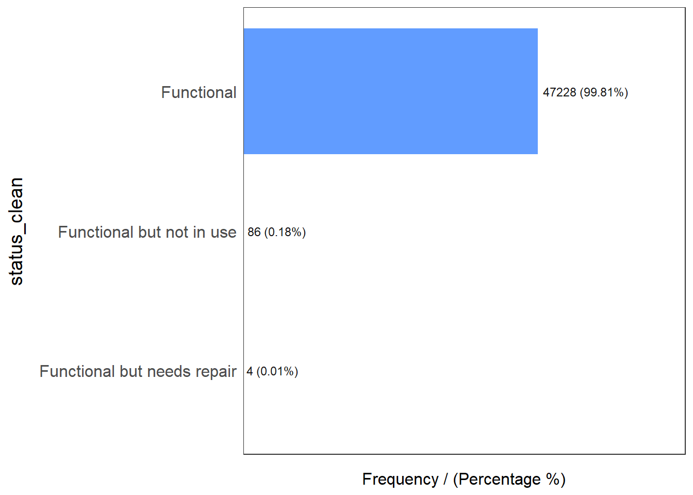
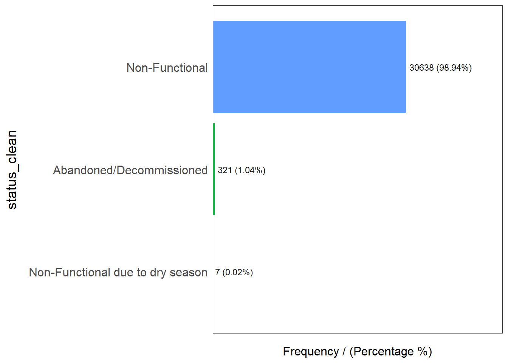
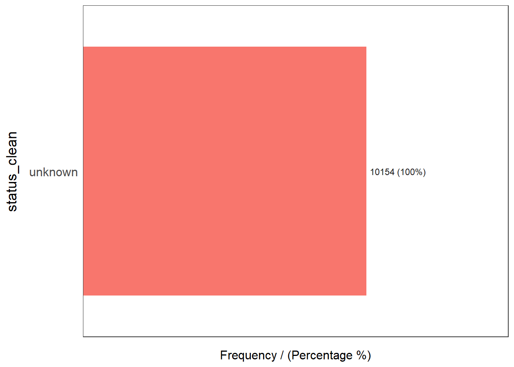
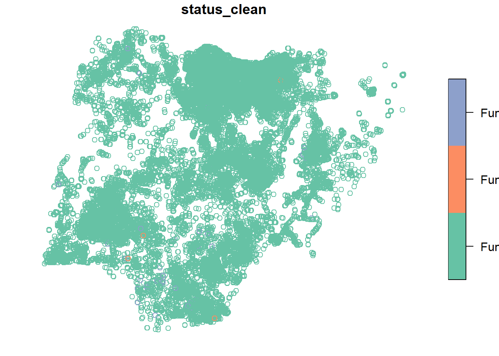
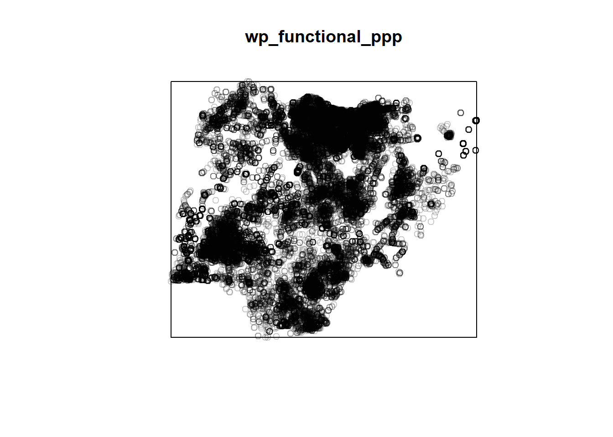
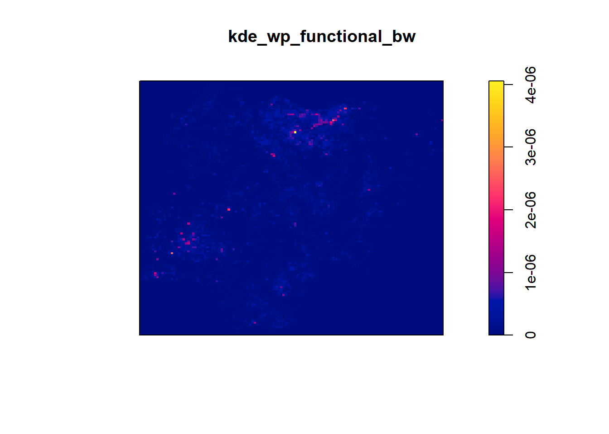
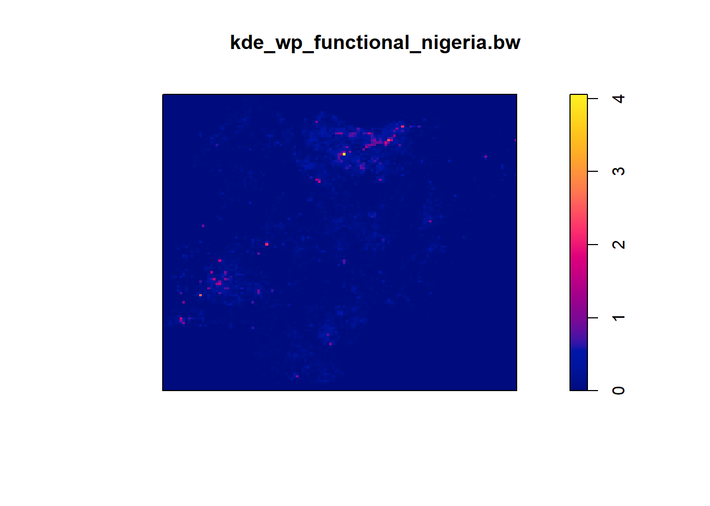
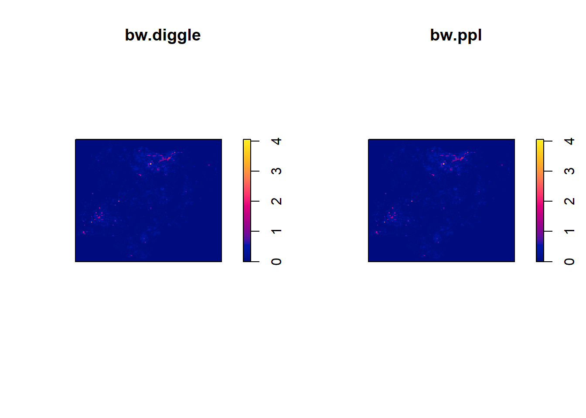

pacman::p_load(sf, tidyverse, funModeling, raster, spatstat, tmap, maptools, sfdep)Take-home Exercise 1: Application of Spatial Point Patterns Analysis to discover the geographical distribution of functional and non-function water points in Osun State, Nigeria
1 Overview
1.1 Setting the Scene

40% of the global population does not have access to sufficient clean water. By 2025, 1.8 billion people will be living in countries or regions with absolute water scarcity, according to UN-Water. The lack of water poses a major threat to several sectors, including food security.
To address the issue of providing clean and sustainable water supply to the rural community, a global Water Point Data Exchange (WPdx) project has been initiated. The main aim of this initiative is to collect water point related data from rural areas at the water point or small water scheme level and share the data via WPdx Data Repository, a cloud-based data library. What is so special of this project is that data are collected based on WPDx Data Standard.
1.2 Objectives
Geospatial analytics hold tremendous potential to address complex problems facing society. In this study, you are tasked to apply appropriate geospatial data wrangling methods to prepare the data for water point mapping study. For the purpose of this study, Nigeria will be used as the study country.
1.3 The Data
1.3.1 Apstial data
wp_nga <- read_csv("data/aspatial/wpdx__ .csv") %>%
filter(`#clean_country_name` == "Nigeria")1.3.2 Geospatial data
geoNGA <- st_read("data/geospatial/",
layer = "geoBoundaries-NGA-ADM2") %>%
st_transform(crs = 26392)Reading layer `geoBoundaries-NGA-ADM2' from data source
`C:\tiffanik\IS415-GAA\Take-home_Ex\Take-home_Ex01\data\geospatial'
using driver `ESRI Shapefile'
Simple feature collection with 774 features and 5 fields
Geometry type: MULTIPOLYGON
Dimension: XY
Bounding box: xmin: 2.668534 ymin: 4.273007 xmax: 14.67882 ymax: 13.89442
Geodetic CRS: WGS 84NGA <- st_read("data/geospatial/",
layer = "nga_admbnda_adm2_osgof_20190417") %>%
st_transform(crs = 26392)Reading layer `nga_admbnda_adm2_osgof_20190417' from data source
`C:\tiffanik\IS415-GAA\Take-home_Ex\Take-home_Ex01\data\geospatial'
using driver `ESRI Shapefile'
Simple feature collection with 774 features and 16 fields
Geometry type: MULTIPOLYGON
Dimension: XY
Bounding box: xmin: 2.668534 ymin: 4.273007 xmax: 14.67882 ymax: 13.89442
Geodetic CRS: WGS 841.3.3 Converting water point data into sf point features
wp_nga$Geometry = st_as_sfc(wp_nga$`New Georeferenced Column`)
wp_nga# A tibble: 97,478 × 75
row_id `#source` #lat_…¹ #lon_…² #repo…³ #stat…⁴ #wate…⁵ #wate…⁶ #wate…⁷
<dbl> <chr> <dbl> <dbl> <chr> <chr> <chr> <chr> <chr>
1 158721 Federal Minis… 5.07 6.62 02/19/… Yes Boreho… Well Mechan…
2 158892 Federal Minis… 5.09 7.09 02/06/… Yes Boreho… Well Hand P…
3 323117 Federal Minis… 5.91 8.77 08/31/… Yes Boreho… Well Hand P…
4 300176 Federal Minis… 5.23 7.32 05/17/… Yes Boreho… Well Mechan…
5 324346 Federal Minis… 6.88 3.36 08/17/… Yes Boreho… Well Mechan…
6 297273 Federal Minis… 6.59 3.29 05/26/… Yes Boreho… Well Mechan…
7 296853 Federal Minis… 6.60 3.26 06/02/… Yes Boreho… Well Mechan…
8 323866 Federal Minis… 6.20 6.73 09/18/… Yes Boreho… Well Mechan…
9 297044 Federal Minis… 6.61 3.30 05/26/… Yes Boreho… Well Mechan…
10 324321 Federal Minis… 6.96 3.60 08/16/… Yes Boreho… Well Mechan…
# … with 97,468 more rows, 66 more variables: `#water_tech_category` <chr>,
# `#facility_type` <chr>, `#clean_country_name` <chr>, `#clean_adm1` <chr>,
# `#clean_adm2` <chr>, `#clean_adm3` <chr>, `#clean_adm4` <chr>,
# `#install_year` <dbl>, `#installer` <chr>, `#rehab_year` <lgl>,
# `#rehabilitator` <lgl>, `#management_clean` <chr>, `#status_clean` <chr>,
# `#pay` <chr>, `#fecal_coliform_presence` <chr>,
# `#fecal_coliform_value` <dbl>, `#subjective_quality` <chr>, …wp_sf <- st_sf(wp_nga, crs=4326)
wp_sfSimple feature collection with 97478 features and 74 fields
Geometry type: POINT
Dimension: XY
Bounding box: xmin: 2.707441 ymin: 4.301812 xmax: 14.21828 ymax: 13.86568
Geodetic CRS: WGS 84
# A tibble: 97,478 × 75
row_id `#source` #lat_…¹ #lon_…² #repo…³ #stat…⁴ #wate…⁵ #wate…⁶ #wate…⁷
* <dbl> <chr> <dbl> <dbl> <chr> <chr> <chr> <chr> <chr>
1 158721 Federal Minis… 5.07 6.62 02/19/… Yes Boreho… Well Mechan…
2 158892 Federal Minis… 5.09 7.09 02/06/… Yes Boreho… Well Hand P…
3 323117 Federal Minis… 5.91 8.77 08/31/… Yes Boreho… Well Hand P…
4 300176 Federal Minis… 5.23 7.32 05/17/… Yes Boreho… Well Mechan…
5 324346 Federal Minis… 6.88 3.36 08/17/… Yes Boreho… Well Mechan…
6 297273 Federal Minis… 6.59 3.29 05/26/… Yes Boreho… Well Mechan…
7 296853 Federal Minis… 6.60 3.26 06/02/… Yes Boreho… Well Mechan…
8 323866 Federal Minis… 6.20 6.73 09/18/… Yes Boreho… Well Mechan…
9 297044 Federal Minis… 6.61 3.30 05/26/… Yes Boreho… Well Mechan…
10 324321 Federal Minis… 6.96 3.60 08/16/… Yes Boreho… Well Mechan…
# … with 97,468 more rows, 66 more variables: `#water_tech_category` <chr>,
# `#facility_type` <chr>, `#clean_country_name` <chr>, `#clean_adm1` <chr>,
# `#clean_adm2` <chr>, `#clean_adm3` <chr>, `#clean_adm4` <chr>,
# `#install_year` <dbl>, `#installer` <chr>, `#rehab_year` <lgl>,
# `#rehabilitator` <lgl>, `#management_clean` <chr>, `#status_clean` <chr>,
# `#pay` <chr>, `#fecal_coliform_presence` <chr>,
# `#fecal_coliform_value` <dbl>, `#subjective_quality` <chr>, …1.3.4 Transforming into Nigeria projected coordinate system
wp_sf <- wp_sf %>%
st_transform(crs = 26392)1.3.4 Geospatial Data Cleaning
1.3.4.1 Excluding redundent fields
NGA <- NGA %>%
dplyr::select(c(3:4, 8:9))1.3.4.2 Checking for duplicate name
NGA$ADM2_EN[duplicated(NGA$ADM2_EN)==TRUE][1] "Bassa" "Ifelodun" "Irepodun" "Nasarawa" "Obi" "Surulere"NGA$ADM2_EN[94] <- "Bassa, Kogi"
NGA$ADM2_EN[95] <- "Bassa, Plateau"
NGA$ADM2_EN[304] <- "Ifelodun, Kwara"
NGA$ADM2_EN[305] <- "Ifelodun, Osun"
NGA$ADM2_EN[355] <- "Irepodun, Kwara"
NGA$ADM2_EN[356] <- "Irepodun, Osun"
NGA$ADM2_EN[519] <- "Nasarawa, Kano"
NGA$ADM2_EN[520] <- "Nasarawa, Nasarawa"
NGA$ADM2_EN[546] <- "Obi, Benue"
NGA$ADM2_EN[547] <- "Obi, Nasarawa"
NGA$ADM2_EN[693] <- "Surulere, Lagos"
NGA$ADM2_EN[694] <- "Surulere, Oyo"NGA$ADM2_EN[duplicated(NGA$ADM2_EN)==TRUE]character(0)1.3.5 Data Wrangling for Water Point Data
funModeling::freq(data = wp_sf,
input = '#status_clean')
#status_clean frequency percentage cumulative_perc
1 Functional 47228 48.45 48.45
2 Non-Functional 30638 31.43 79.88
3 <NA> 10154 10.42 90.30
4 Functional, needs repair 4792 4.92 95.22
5 Non-Functional, dry 2473 2.54 97.76
6 Functional, not in use 1775 1.82 99.58
7 Abandoned/Decommissioned 321 0.33 99.91
8 Functional but not in use 86 0.09 100.00
9 Non-Functional due to dry season 7 0.01 100.01
10 Functional but needs repair 4 0.00 100.00wp_sf_nga <- wp_sf %>%
rename(status_clean = '#status_clean') %>%
dplyr::select(status_clean) %>%
mutate(status_clean = replace_na(
status_clean, "unknown"))1.3.5.1 Extracting Water Point Data
wp_functional <- wp_sf_nga %>%
filter(status_clean %in%
c("Functional",
"Functional but not in use",
"Functional but needs repair"))wp_nonfunctional <- wp_sf_nga %>%
filter(status_clean %in%
c("Abandoned/Decommissioned",
"Abandoned",
"Non-Functional due to dry season",
"Non-Functional",
"Non functional due to dry season"))wp_unknown <- wp_sf_nga %>%
filter(status_clean == "unknown")funModeling::freq(data = wp_functional,
input = 'status_clean')
status_clean frequency percentage cumulative_perc
1 Functional 47228 99.81 99.81
2 Functional but not in use 86 0.18 99.99
3 Functional but needs repair 4 0.01 100.00funModeling::freq(data = wp_nonfunctional,
input = 'status_clean')
status_clean frequency percentage cumulative_perc
1 Non-Functional 30638 98.94 98.94
2 Abandoned/Decommissioned 321 1.04 99.98
3 Non-Functional due to dry season 7 0.02 100.00funModeling::freq(data = wp_unknown,
input = 'status_clean')
status_clean frequency percentage cumulative_perc
1 unknown 10154 100 1002 Exploratory Spatial Data Analysis (ESDA)
2.1 Derive kernel density maps of functional water points
plot(wp_functional)
summary(wp_functional) status_clean Geometry
Length:47318 POINT :47318
Class :character epsg:26392 : 0
Mode :character +proj=tmer...: 0 any(duplicated(wp_functional))[1] FALSEsum(multiplicity(wp_functional) > 1)[1] 0library(tmap)
wp_func <- as_Spatial(wp_functional)
wp_funcclass : SpatialPointsDataFrame
features : 47318
extent : 29322.63, 1293137, 33758.37, 1092629 (xmin, xmax, ymin, ymax)
crs : +proj=tmerc +lat_0=4 +lon_0=8.5 +k=0.99975 +x_0=670553.98 +y_0=0 +a=6378249.145 +rf=293.465 +towgs84=-92,-93,122,0,0,0,0 +units=m +no_defs
variables : 1
names : status_clean
min values : Functional
max values : Functional but not in use wp_f_sp <- as(wp_func, "SpatialPoints")
wp_f_spclass : SpatialPoints
features : 47318
extent : 29322.63, 1293137, 33758.37, 1092629 (xmin, xmax, ymin, ymax)
crs : +proj=tmerc +lat_0=4 +lon_0=8.5 +k=0.99975 +x_0=670553.98 +y_0=0 +a=6378249.145 +rf=293.465 +towgs84=-92,-93,122,0,0,0,0 +units=m +no_defs wp_functional_ppp <- as(wp_f_sp, "ppp")
wp_functional_pppPlanar point pattern: 47318 points
window: rectangle = [29322.6, 1293137] x [33758.4, 1092628.9] unitsplot(wp_functional_ppp)
summary(wp_functional_ppp)Planar point pattern: 47318 points
Average intensity 3.535902e-08 points per square unit
Coordinates are given to 2 decimal places
i.e. rounded to the nearest multiple of 0.01 units
Window: rectangle = [29322.6, 1293137] x [33758.4, 1092628.9] units
(1264000 x 1059000 units)
Window area = 1.33822e+12 square units2.1.1 Handling duplicated points
any(duplicated(wp_functional_ppp))[1] FALSEsum(multiplicity(wp_functional_ppp) > 1)[1] 0kde_wp_functional_bw <- density(wp_functional_ppp,
sigma=bw.diggle,
edge=TRUE,
kernel="gaussian") plot(kde_wp_functional_bw)
bw <- bw.diggle(wp_functional_ppp)
bw sigma
278.5129 wp_functional_ppp.km <- rescale(wp_functional_ppp, 1000, "km")kde_wp_functional_nigeria.bw <- density(wp_functional_ppp.km, sigma=bw.diggle, edge=TRUE, kernel="gaussian")
plot(kde_wp_functional_nigeria.bw)
kde_wp_functional_nigeria.ppl <- density(wp_functional_ppp.km,
sigma=bw.ppl,
edge=TRUE,
kernel="gaussian")
par(mfrow=c(1,2))
plot(kde_wp_functional_nigeria.bw, main = "bw.diggle")
plot(kde_wp_functional_nigeria.ppl, main = "bw.ppl")
2.2 Derive kernel density maps of non-functional water points
2.3 Display the kernel density maps on openstreetmap of Osub State, Nigeria.
2.4 Describe the spatial patterns revealed by the kernel density maps. Highlight the advantage of kernel density map over point map.
- dcd
3 Second-order Spatial Point Patterns Analysis
3.1 Formulate the null hypothesis and alternative hypothesis and select the confidence level
3.2 Formulate the null hypothesis and alternative hypothesis and select the confidence level
3.3 Statistical conclusions
4 Spatial Correlation Analysis
4.1 Formulate the null hypothesis and alternative hypothesis and select the confidence level
4.2 Formulate the null hypothesis and alternative hypothesis and select the confidence level
4.3 Statistical conclusions